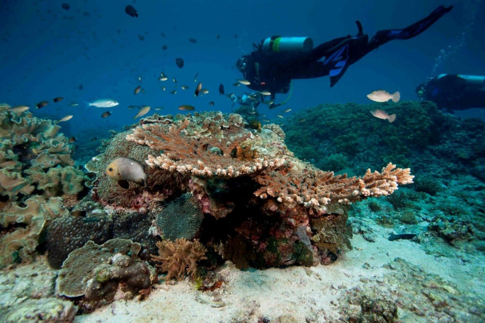
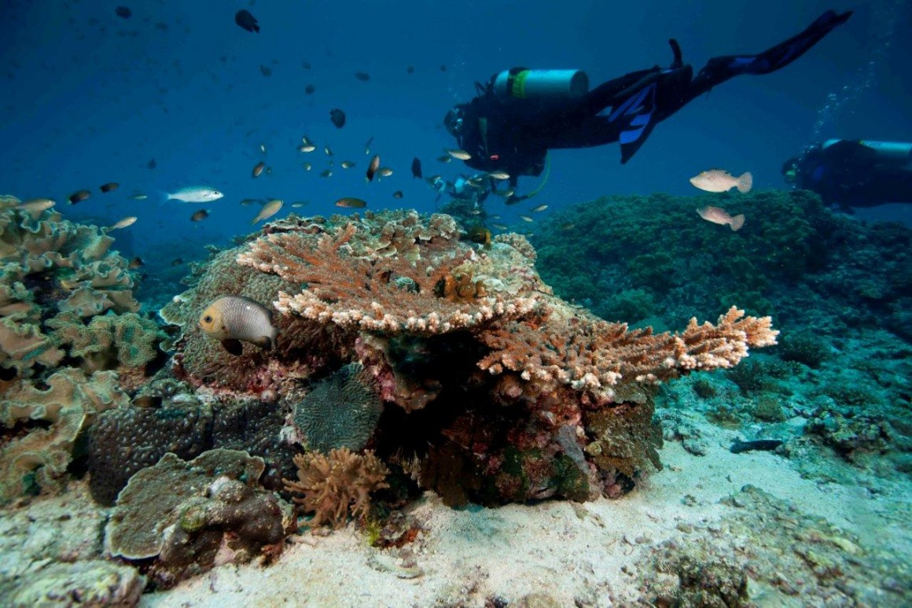

What do you get if you combine the Hulk with The Powerpuff Girls; Ben 10 and Captain America; Gumball and Iron Man? Not to mention erupting volcanoes, 69 life-like, breathing dinosaurs and hair-raising rollercoasters? The answer: IMG Worlds of Adventure of course.

Atlantis, The Palm
Make friends with fins
Atlantis, The Palm offers unforgettable and up-close animal experiences. There’s everything from shark safaris to tank dives and snorkel excursions, as well as one of the
most sophisticated dolphin habitats in the world. There's also the chance to go behind-the-scenes to learn more and meet rare animals, such as white-skinned albino
alligators.
Head over to this newly opened children’s paradise in Dubai Parks and Resorts and find out why families that shriek together have more fun. As well as a number of group rides including classics like Rescue Academy and Legoland Driving School, there's a hair-raising Dragon coaster which will keep the little ones longing more. The best bit? There’s a waterpark too!
Ride the dunes
There are few experiences that are as Wonderful as the desert safari. Take a backseat and hold on tight as an experienced driver whips you around the sand dunes,
teetering on the edge of seemingly sheer drops, before dipping down sandy slopes and back up again. There's a couple of stops for sunset photos before you're safely
whisked away to a traditional-style Bedouin camp, where an Arabic buffet dinner awaits.
Get An Adrenaline Rush , Available to hire by the half hour, the quad bikes are speedy and a helmet must be worn while riding. Follow the natural trail of the dunes, kicking sand in the face of your fellow riders. An Experience not to be missed.
There’s something for all ages from toddlers to teenagers at Kite Beach, Dubai’s new hangout this winter. Toddlers will have no trouble burning off energy at the immaculately landscaped adventure playground The Journey in Umm Suqeim. Inside there are wooden treehouses, a mud kitchen, rope bridges, bow and arrows for archery, fountains to splash in, a waterfall and even a vegetable patch. Right behind, the park rubs shoulders with Jumeirah's Kite Beach, outdoor trampolines and Skate Park, making it a one-stop-shop for family activities. Afterwards have dinner at one of the food trucks along the corniche.
Leave the skyscrapers and beaches far behind and conquer the mountains. Tucked away in the Hajar Mountains, the rocky enclave of Hatta is about a short 1.5-hour road trip from Dubai and home to natural springs and craggy mountain peaks. Prepare a picnic and take in some shade or stop into the Hatta Fort Hotel for lunch, where an array of family activities are on offer: archery, swimming, tennis and mini-golf. The more adventurous can hop onto a mountain bike and take on the many planned trails.
A short way off the east coast of Sharjah, this small rocky island boasts a sandy beach perfect for camping and colourful aquatic life for snorkeling. Shark Island is an idyllic spot for swimming and sunbathing. Schools of fish, anemones and sea turtles make it a treat for snorkellers, while divers flock here for the beautiful rock formations teeming with moray eels, rays and Arabian angelfish.
You can take a small boat to the island, and there are shacks on the beach where you can rent snorkels, fins and masks. Local dive centres can organise day trips and equipment rental for scuba divers. It’s also a lovely spot for a beach picnic
Location :
Shark Island, Khorfakkan
Shark Island is located a short boat-ride away from Khorfakkan on Sharjah’s east coast. It lies just out in the bay, tucked behind the port at the southern end of the beach.
 
Ras Al Khaimah’s Jebel Jais – the highest mountain in the UAE, is home to the world’s longest zipline……a bucket list attraction for the UAE and the world. The zip line will propel the UAE’s most northern emirate into the major leagues of global adventure tourism and cements Jebel Jais as the region’s leading active adventure tourism destination.
Thrill-seekers and adrenaline junkies will travel at speeds of up to 120kph to 150kph at a height of 1,680 metres above sea level on top of Jebel Jais mountain. The experience will see participants fitted with a special harness for the adventure, with the longest flight itself taking approximately two to three minutes. Once completed, guests will finish the bucket list flight on a suspended landing platform where they will be transferred to a second line to complete their journey back to the ground.
Abu Dhabi, Yas Island
The world’s first Ferrari-branded theme park is home to a winning mix of Ferrari inspired rides and attractions, the biggest Ferrari Store and a range of authentic Italian
dining options for the whole family. Beneath its iconic red roof, the entertainment destination houses 37 record-breaking thrill rides and an array of world-class cuisines.
The star attractions at Ferrari World Abu Dhabi include the new Flying Aces ride featuring the highest rollercoaster loop in the world, Formula Rossa which is the world’s
fastest roller coaster with a top speed of 250kmph in 4.9 seconds, family-friendly attractions, state-of-the-art simulators, electric-powered go-karts, live shows and an inspiring
collection of racing memorabilia. Open 365 days a year, Ferrari World Abu Dhabi offers a unique experience for visitors of every age in a refreshing, indoor,
climate-controlled environment.
Ticket: Dhs 295 for adults, Dhs 230 for children

This futuristic waterpark spans across an area as big as 15 football pitches, with 43 rides, slides, and attractions – five of which are one-of-a-kind. Visitors at Yas Waterworld can experience the world’s first and largest hydro-magnetic-powered, six-person tornado waterslide that extends up to 235 meters in length. For adrenaline junkies, there are three-meter-high waves on Bubble’s Barrel, which has the world’s largest surf sheet wave for flow-boards and body-boards. The Bandit Bomber, a 550– meter coaster, is the first with onboard water and laser effects. Riders can shoot jets of water at targets, drop water bombs and trigger special effects, while people below can spray them with water as they pass.
Sitting atop Jebel Dana, the towering core of the park’s altitude-defying summit and measuring eight meters in diameter, the park’s gigantic pearl is Yas Island’s newest
landmark. The park draws on Abu Dhabi’s heritage with “the lost pearl” theme that follows the story of a young Emirati girl on a quest to find a legendary pearl as they make
their way around the attractions, which include a souk and pearl-diving exhibits.
Ticket: Dhs 295 for adults, Dhs 230 for children